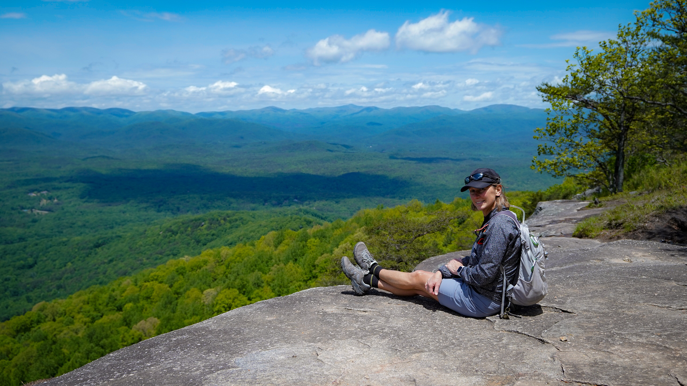
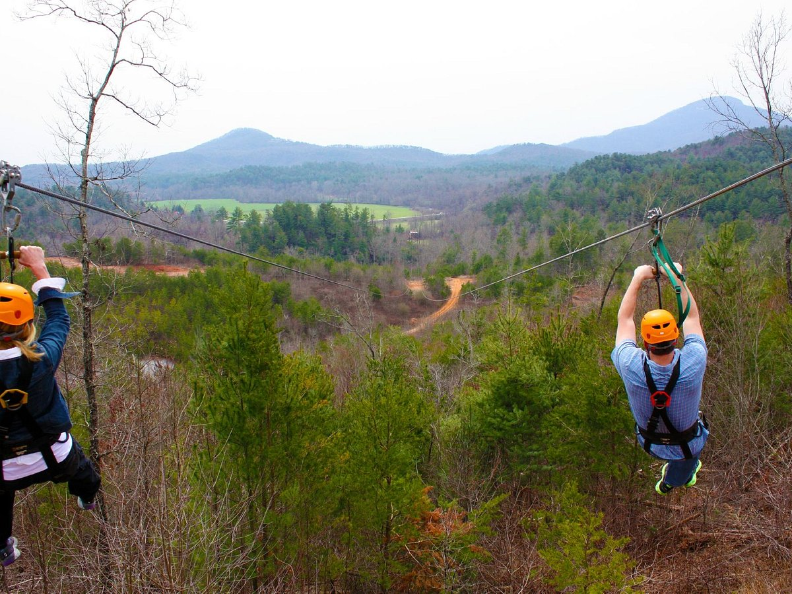
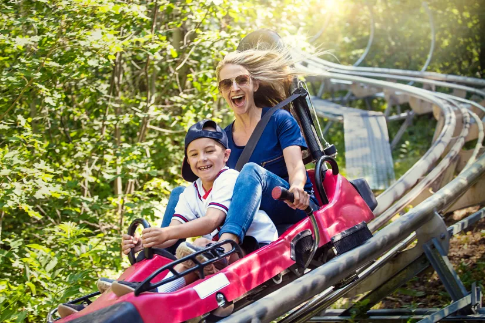

Helen's Adventure
Hiking
Mount Yonah
One of north Georgia's most popular hikes for good reason, Yonah Mountain offers breathtaking views from the south to the northwest all along it's lengthy bare rock face. The scenery is even more rewarding due to the steep climb of 1500 feet in just over 2 miles. Although this trail is definitely not for beginners, it's one that should be on every hiker's bucket list.
Ziplines
Sky Valley Resort
Sky Valley Resort: Located just outside of Helen, it offers a thrilling zipline course with amazing mountain views. This facility provides over 140 acres in the Blue Ridge Mountains. Experience the High Country from 300 feet above the valley as you fly across our exhilarating 1600 foot line, Big Momma!
Mountain Coaster
Alpine
Helen, Georgia is home to an exciting Mountain Coaster experience called the Alpine Coaster. The Alpine Coaster is a gravity-powered roller coaster that takes riders down a mountain slope with twists, turns, and beautiful views of the surrounding forest. It's a unique experience where you control your speed, so you can go as fast or slow as you like while enjoying the ride.